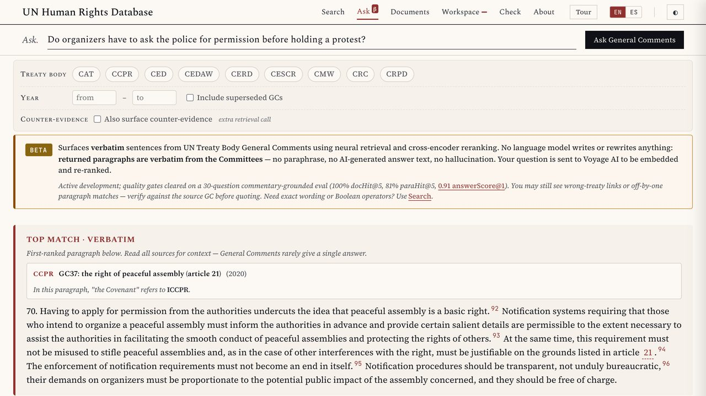

New Technologies cluster · Session 2 of 4
Find it, cite it, check it: from a paragraph to a vote, then your first build
Łukasz Szoszkiewicz
Adam Mickiewicz University, Poznań
Global Campus of Human Rights
Monastery of San Nicolò, Lido di Venezia
Why these tools
2016
A member of a treaty body showed me his innovation: all General Comments merged into one Word file, so that Ctrl+F works across them.
2022
For researchers working on different committees, my scripts became one workflow in Orange Data Mining, an open visual tool.
Since 2023
With generative AI, a graphical interface on top of each script: a tool anyone can open in a browser.
Yesterday’s habit in practice: AI helped me build the tools. It does not answer your questions. Every result is the text of a UN document.
Tools Built with AI · Global Campus of Human Rights
2 / 20
Design principles
1
AI helped write the software and prepare the data. Every result is verbatim text, with its UN symbol and paragraph number.
2
The smallest citable unit: a paragraph, a speech, a vote, a recommendation. One click copies it with its full citation.
3
Each result links to the official record: OHCHR, the Official Document System, the UN Digital Library.
Tools Built with AI · Global Campus of Human Rights
3 / 20
Four tools, four official sources
UN Human Rights Database
323,000+ paragraphs: General Comments, treaty body jurisprudence, Special Procedures reports
docs.un.org
UN Travaux Préparatoires
29,694 speeches from the drafting of the UDHR, the ICCPR and the ICESCR (1946–1966), with votes and amendments
UN scans
HRC Voting
7,420 texts of the Commission, the Human Rights Council and the Third Committee; 2,736 decided by a recorded vote
OHCHR Library
UHRI+
278,000+ recommendations and observations addressed to States by UN mechanisms
uhri.ohchr.org
Tools Built with AI · Global Campus of Human Rights
4 / 20
One question for the whole session
Article 21 ICCPR allows restrictions on peaceful assembly only if they are necessary in a democratic society. What does that mean, where do the words come from, and what do States do with them today?
Find
General Comment No. 37
UN Human Rights Database
Origin
The drafting in 1952
Travaux Préparatoires
Politics
Votes on peaceful protests
HRC Voting
Practice
Recommendations to States
UHRI+
1 · UN Human Rights Database · Find and cite
Article 21 provides that any restrictions must be “necessary in a democratic society”. Restrictions must therefore be necessary and proportionate in the context of a society based on democracy, the rule of law, political pluralism and human rights, as opposed to being merely reasonable or expedient.
CCPR/C/GC/37, para. 40
Try it: search “necessary in a democratic society” → filter CCPR → open ¶ 40 → Copy citation → docs.un.org
Tools Built with AI · Global Campus of Human Rights
6 / 20
1 · UN Human Rights Database · Check
The Human Rights Committee requires restrictions to be “necessary and proportionate in the context of a society based on democracy and the rule of law” (CCPR/C/GC/37, para. 41).
Two minutes: write down what is wrong.
Paste the sentence: symbol resolved, paragraph checked, quotation compared with the source.
Try it on a paragraph from your own writing.
lszoszk.github.io/generalcomments → Check
Tools Built with AI · Global Campus of Human Rights
7 / 20
1 · UN Human Rights Database · Ask
“Do organizers have to ask the police for permission before holding a protest?”
Search, where every word must appear: 0 paragraphs.
Ask, first result
Having to apply for permission from the authorities undercuts the idea that peaceful assembly is a basic right.
CCPR/C/GC/37, para. 70
A model only finds and orders the paragraphs. Every word on the screen is the Committee’s.

Tools Built with AI · Global Campus of Human Rights
8 / 20
Measured, not assumed · how I build the test
Treaty body Views that cite a General Comment paragraph for a sentence. The paragraph they cite is the answer.
Claims about the drafting in two commentaries, Nowak (2005) and Saul, Kinley and Mowbray (2014). The record they cite is the answer.
One of the 389 cases
Views CCPR/C/131/D/2635/2015 cite CCPR/C/GC/37, para. 36 for: “The onus is on States parties to justify the limitations on the right protected by article 21 of the Covenant…”
The sentence as cited; a few keywords; and a question a model wrote from it:
“Who must justify limits on assembly and show they do not unduly obstruct people exercising it?”
Is para. 36 among the first 10 results?
Ask: first, for the sentence and for the question.
Search: nothing.
Nowak, CCPR Commentary (2005) · Saul, Kinley and Mowbray, The ICESCR: Commentary, Cases and Materials (2014)
9 / 20
Measured, not assumed · a private benchmark
Right source among the first 10 results. Test sentences taken from UN Views and from two commentaries, also asked as questions and as keywords.
| The query is… | UN-HRDB · Ask | UN-HRDB · Search | Travaux · Ask | Travaux · Search |
|---|---|---|---|---|
| the sentence as cited | 53% | 2% | 82% | 1% |
| a question | 42% | 0% | 73% | 1% |
| a few keywords | 34% | 9% | 26% | 45% |
A question in your own words: use Ask. A few words: use Search.
UN-HRDB: 389 cases, 7–8 Nov 2026 · Travaux: 579 claims, 4 and 8 Nov 2026
10 / 20
2 · UN Travaux Préparatoires · Origin
The French amendment (E/CN.4/L.201) to insert the words “in a democratic society” after “necessary” was adopted by 9 votes to 8, with 1 abstention.
E/CN.4/SR.325, p. 20
Roosevelt (United States) opposed the words because of their ambiguity (p. 15)
Cassin (France): a reference to public order and to democratic society was essential to safeguard the freedoms (pp. 11–12)
Summary records paraphrase in the third person: check the scan before you quote.
lszoszk.github.io/travaux-preparatoires
11 / 20
3 · HRC Voting · Politics
| Year | Resolution | Yes · no · abst. |
|---|---|---|
| 2014 | A/HRC/RES/25/38 | 31 · 9 · 7 |
| 2016 | A/HRC/RES/31/37 | 31 · 5 · 10 |
| 2018–2024 | four resolutions | without a vote |
Between 2016 and 2024, 19 amendments to these resolutions were put to a vote. All were rejected.
Try it: Topics → Right to Assembly → with amendments → your State’s votes → the OHCHR Library record
12 / 20
4 · UHRI+ · Practice
3,700+
recommendations and observations carry the theme “right to peaceful assembly” in UHRI+.
The same data as the UN’s Universal Human Rights Index, cleaned, with a map and statistics. Every record opens in UHRI.
Try it: Theme → Right to peaceful assembly → the map → body, country, years → the record on uhri.ohchr.org
lszoszk.github.io/UnitedNations_recommendations
13 / 20
The whole route
CCPR/C/GC/37, para. 40
Necessary and proportionate, not merely reasonable or expedient (2020)
E/CN.4/SR.325, p. 20
The French amendment adopted 9 – 8 – 1 on 6 June 1952
A/HRC/RES/25/38
Adopted 31 – 9 – 7 in 2014; later, 19 amendments rejected
UHRI+, 3,700+ records
What States are told about peaceful assembly, until today
Tools Built with AI · Global Campus of Human Rights
14 / 20
Beyond the browser · MCP
The Model Context Protocol lets an assistant (Claude, ChatGPT and others) query a database while it answers. The tool returns the verbatim paragraph with its UN symbol; the assistant writes around it.
UN-HRDB with the UHRI recommendations
https://150.254.115.204/unhrdb-mcp-rpc/mcp
Travaux
https://150.254.115.204/travaux-api/mcp
The conversation goes to the company that runs the assistant: no confidential text there.
claude.ai → Customize → Connectors → Add custom connector · modelcontextprotocol.io
15 / 20
Now you build one
Describe a tool in plain words. A model writes it. It runs in your browser, on UN data.
Garage Research · how it works
A tool in plain words, like a chat, with a data file from the shelf.
You choose a European, US or Chinese model. It sees your words and three sample records.
The code runs in your browser, on the whole dataset. The data never leave.
Look inside
Layers and Run it three times: what the model wrote once, what the code computes every time · What left this laptop: every request, what was sent and what was not · Save as file: your app opens offline, without any model
Tools Built with AI · Global Campus of Human Rights
17 / 20
Garage Research · get in
1
Enter the seat code from your card
2
Choose your country
3
Click through the tour: eight steps
Tools Built with AI · Global Campus of Human Rights
18 / 20
Garage Research · your first build
1
In the top bar, switch to Session 8.
2
From Your files, drag the Council votes into the chat.
3
Pick How two States vote at the Human Rights Council and send it.
4
While the model plans and writes (3 to 9 minutes), read its thinking.
5
Compare two States you care about. Then Look inside → Run it three times.
Tools Built with AI · Global Campus of Human Rights
19 / 20
Tomorrow · Garage Research
A dashboard of the UN’s recommendations to your country, then a tool that checks every quotation in your own text.
From a PDF to numbered paragraphs, and why generation is the last resort.
Everything in one place: lszoszk.github.io/teaching-materials/global-campus